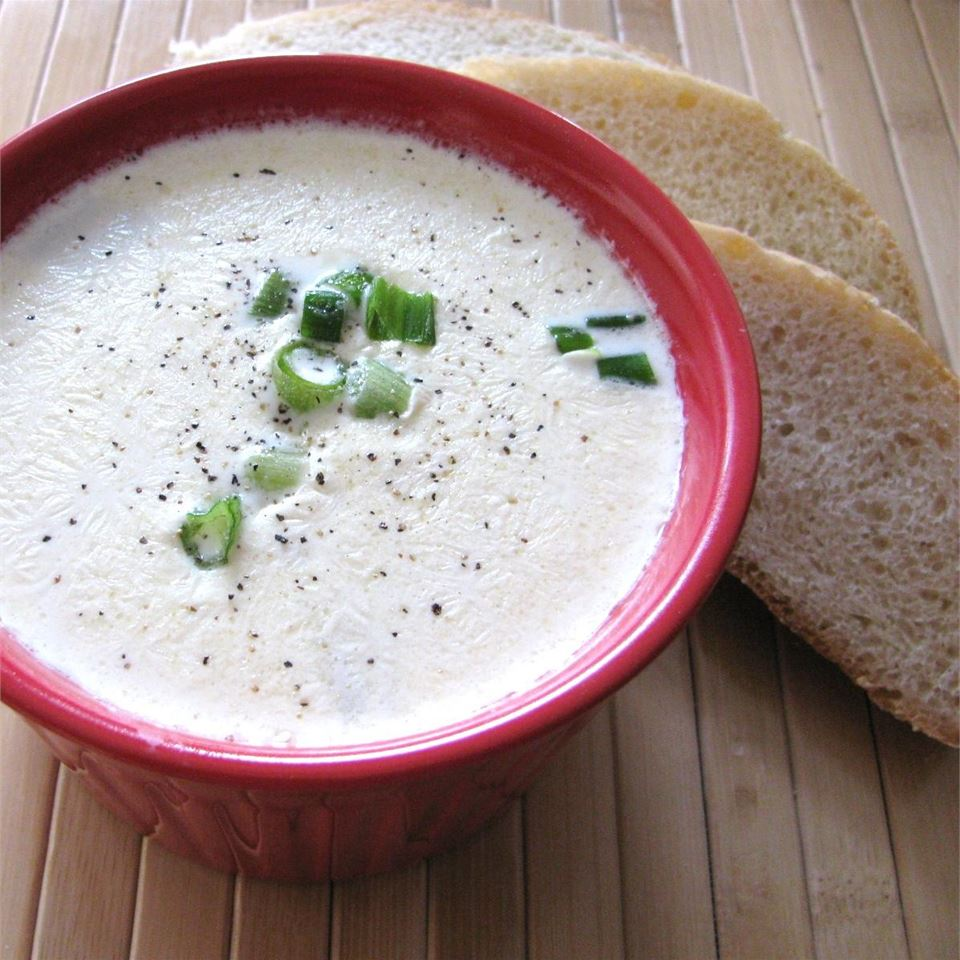

Clam Chowder
Or as they say in Maine, Clam Chowda!

Description
The best ever clam chowder you have ever tasted, and it is easy
and fast. You will pass this recipe along to your family
and friends. If you like more clams you can always add more.
Sometimes I will also cube potatoes and throw them in.
Ingredients List
- 1 (10.75 ounce) can condensed cream of celery soup
- 1 (10.75 ounce) can condensed cream of potato soup
- 1 (10.75 ounce) can New England clam chowder
- 2 (6.5 ounce) cans minced clams
- 1 quart half-and-half cream
- 1 pint heavy whipping cream
Directions
- Mix cream of celery soup, cream of potato soup, clam chowder, 1 can undrained clams, 1 can drained clams, half-and-half cream, and whipping cream into a slow cooker.
- Cover, and cook on low for 6 to 8 hours.
Nutritional Information
- 425 calories
- protein 16.1g
- carbohydrates 17.6g
- fat 32.5g
- cholesterol 134.3mg
- sodium 739.6mg
Invite your friends and family over, once everyone is inside after pahkin theah cahs, you'll have a pissah time serving this recipe!